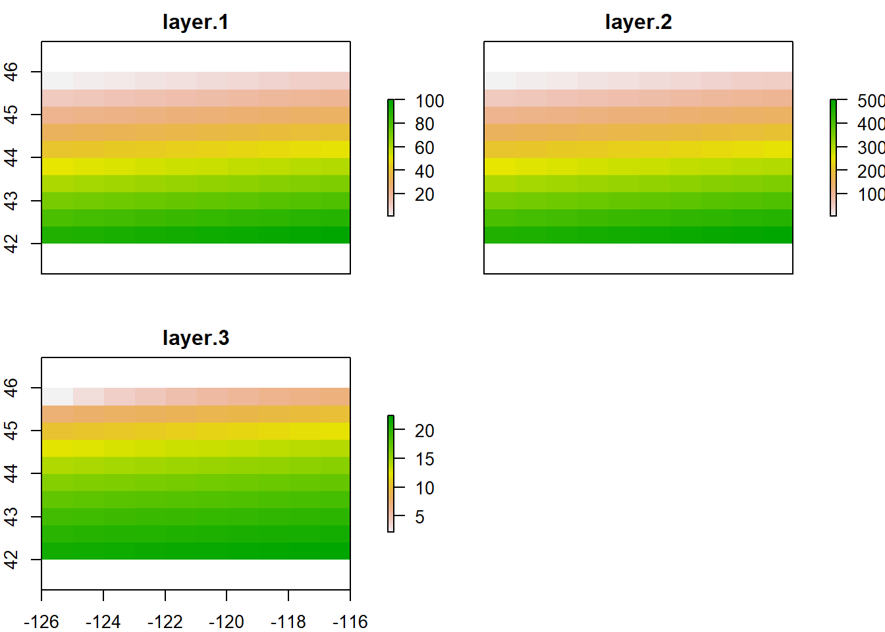

Chapter 5 Raster data
Support for gridded data in R in recent year has been best implemented with the raster package by Robert Hijmans. The raster package allows you to:
- read and write almost any commonly used raster data format using
rgdal - perform typical raster processing operations such as resampling, projecting, filtering, raster math, etc.
- work with files on disk that are too big to read into memory in R
- run operations quickly since the package relies on back-end C code
The home page for the raster package has links to several well-written vignettes and documentation for the package.
The raster package uses three classes / types of objects to represent raster data - RasterLayer, RasterStack, and RasterBrick - these are all S4 new style classes in R, just like sp classes.
There are new developments in raster world in R worth noting - a new package called stars (spatiotemporal tidy arrays with R) has been developed through an R-Consortium funded project to handle rasters in a way that is both sf and pipe-based workflow friendly.
Additionally, Robert Hijmans has a new in development package called terra as a replacement package for raster.
To familiarize ourselves with the raster package, let’s create an empty RasterLayer object - in order to do this we have to:
* define the matrix (rows and columns)
* define the spatial bounding box
* provide values to the cells
Note that typically we would be reading raster data in from a file rather than creating a raster from scratch. Run through code steps below to familiarize yourself with contsructing a RasterLayer from scratch.
## Formal class 'RasterLayer' [package "raster"] with 12 slots
## ..@ file :Formal class '.RasterFile' [package "raster"] with 13 slots
## .. .. ..@ name : chr ""
## .. .. ..@ datanotation: chr "FLT4S"
## .. .. ..@ byteorder : chr "little"
## .. .. ..@ nodatavalue : num -Inf
## .. .. ..@ NAchanged : logi FALSE
## .. .. ..@ nbands : int 1
## .. .. ..@ bandorder : chr "BIL"
## .. .. ..@ offset : int 0
## .. .. ..@ toptobottom : logi TRUE
## .. .. ..@ blockrows : int 0
## .. .. ..@ blockcols : int 0
## .. .. ..@ driver : chr ""
## .. .. ..@ open : logi FALSE
## ..@ data :Formal class '.SingleLayerData' [package "raster"] with 13 slots
## .. .. ..@ values : logi(0)
## .. .. ..@ offset : num 0
## .. .. ..@ gain : num 1
## .. .. ..@ inmemory : logi FALSE
## .. .. ..@ fromdisk : logi FALSE
## .. .. ..@ isfactor : logi FALSE
## .. .. ..@ attributes: list()
## .. .. ..@ haveminmax: logi FALSE
## .. .. ..@ min : num Inf
## .. .. ..@ max : num -Inf
## .. .. ..@ band : int 1
## .. .. ..@ unit : chr ""
## .. .. ..@ names : chr ""
## ..@ legend :Formal class '.RasterLegend' [package "raster"] with 5 slots
## .. .. ..@ type : chr(0)
## .. .. ..@ values : logi(0)
## .. .. ..@ color : logi(0)
## .. .. ..@ names : logi(0)
## .. .. ..@ colortable: logi(0)
## ..@ title : chr(0)
## ..@ extent :Formal class 'Extent' [package "raster"] with 4 slots
## .. .. ..@ xmin: num -126
## .. .. ..@ xmax: num -116
## .. .. ..@ ymin: num 42
## .. .. ..@ ymax: num 46
## ..@ rotated : logi FALSE
## ..@ rotation:Formal class '.Rotation' [package "raster"] with 2 slots
## .. .. ..@ geotrans: num(0)
## .. .. ..@ transfun:function ()
## ..@ ncols : int 10
## ..@ nrows : int 10
## ..@ crs :Formal class 'CRS' [package "sp"] with 1 slot
## .. .. ..@ projargs: chr "+proj=longlat +datum=WGS84 +no_defs"
## ..@ history : list()
## ..@ z : list()raster uses a S4 slot structure with a RasterLayer object. Simply typing the name of the RasterLayer gives a summary of the object at the console.
## class : RasterLayer
## dimensions : 10, 10, 100 (nrow, ncol, ncell)
## resolution : 1, 0.4 (x, y)
## extent : -126, -116, 42, 46 (xmin, xmax, ymin, ymax)
## crs : +proj=longlat +datum=WGS84 +no_defs5.0.1 Exploring raster objects
- what is the minimal data required to define a
RasterLayer? - What is odd here about the CRS?
- How do we pull out just the CRS for our r
rasterLayer? - Building on this, what is the code to pull out just our xmin value in our extent, or bounding box?
5.0.2 Answer
number columns, number rows, and extent - though the
rasterpackage will use defaults if values aren’t providedWe didn’t provide one -
rasteruses defaultcrsof WGS84 if you don’t provide acrs
## CRS arguments: +proj=longlat +datum=WGS84 +no_defs## CRS arguments: +proj=longlat +datum=WGS84 +no_defs## [1] "file" "data" "legend" "title" "extent" "rotated"
## [7] "rotation" "ncols" "nrows" "crs" "history" "z"## [1] -126## [1] "xmin" "xmax" "ymin" "ymax"## [1] -126## [1] -1265.0.3 Manipulating raster objects
So far we just have a container with no values (try plotting what we have so far) - let’s provide values to the cells using the runif function to derive random values from the uniform distribution
## class : RasterLayer
## dimensions : 10, 10, 100 (nrow, ncol, ncell)
## resolution : 1, 0.4 (x, y)
## extent : -126, -116, 42, 46 (xmin, xmax, ymin, ymax)
## crs : +proj=longlat +datum=WGS84 +no_defs
## source : memory
## names : layer
## values : 0.005185862, 0.9989325 (min, max)Notice the different output now when typing ‘r?’ An important point to make here is that objects in the raster package can be either in memory or on disk - not the value for our RasterLayer r of ‘data source’. If this were a large raster on disk, the value would be the path to the file on disk.
We can test this as well using methods in raster (and test if the raster has values too):
## [1] TRUE## [1] FALSE## [1] TRUEWe can plot now as well with base R plot:

We can also overwrite the cell values for our raster:
## [1] 1 2 3 4 5 6 7 8 9 10 11 12 13 14 15 16 17 18
## [19] 19 20 21 22 23 24 25 26 27 28 29 30 31 32 33 34 35 36
## [37] 37 38 39 40 41 42 43 44 45 46 47 48 49 50 51 52 53 54
## [55] 55 56 57 58 59 60 61 62 63 64 65 66 67 68 69 70 71 72
## [73] 73 74 75 76 77 78 79 80 81 82 83 84 85 86 87 88 89 90
## [91] 91 92 93 94 95 96 97 98 99 100You can access raster values via direct indexing or line, column indexing - take a minute to see how this works using raster r we just created - the syntax is:
How is raster data storage unlike a matrix in R? You can create a matrix with same dimensions and values and compare if you want:
## [1] 11## [1] 25.0.4 RasterBricks and Rasterstacks
RasterBrick and RasterStack are the two additional classes in raster and handle multiple raster layers. They differ from each other in how they handle multiple layers, file formats they support, their representation and their processing speed. A RasterBrick typically is a single multi-layer file such as a multispectral image. A RasterStack can virtually connect several RasterLayer objects in memory and allows pixel-based calculations on separate raster layers, while a RasterBrick has to refer to a single multi-layer file or multi-layer object. Note that methods that operate on either a RasterStack or RasterBrick usually return a RasterBrick, and processing will be mor efficient on a RasterBrick object.
It’s easy to manipulate our RasterLayer to make a couple new layers, and then stack layers:
## class : RasterStack
## dimensions : 10, 10, 100, 3 (nrow, ncol, ncell, nlayers)
## resolution : 1, 0.4 (x, y)
## extent : -126, -116, 42, 46 (xmin, xmax, ymin, ymax)
## crs : +proj=longlat +datum=WGS84 +no_defs
## names : layer.1, layer.2, layer.3
## min values : 1.000000, 50.000000, 2.236068
## max values : 100.00000, 5000.00000, 22.36068
Same process for generating a raster brick (here I make layers and create a RasterBrick in same step):
## class : RasterBrick
## dimensions : 10, 10, 100, 3 (nrow, ncol, ncell, nlayers)
## resolution : 1, 0.4 (x, y)
## extent : -126, -116, 42, 46 (xmin, xmax, ymin, ymax)
## crs : +proj=longlat +datum=WGS84 +no_defs
## source : memory
## names : layer.1, layer.2, layer.3
## min values : 1.000000, 50.000000, 2.236068
## max values : 100.00000, 5000.00000, 22.36068